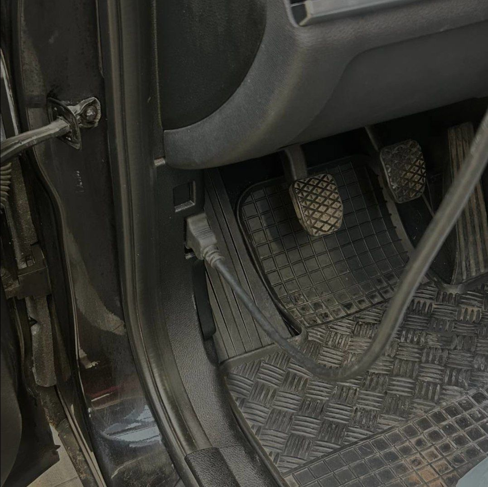

Home / Battery and electrical
BMW Battery Registration: What It Is and Why It Matters
Quick answer
A BMW doesn't notice that a new battery has been installed, so the car keeps managing it as if it were the old one. Registration tells the car the battery has been replaced and what type and capacity the new one is. It is done with a scanner that has BMW functions: connect it to the OBD port, find the battery registration function and confirm the change. A basic OBD reader usually can't do it.

What battery registration is
Many BMWs have an intelligent battery sensor (IBS) on the negative battery terminal. It measures voltage, current and temperature, and the car uses that information to manage charging and the electrical system. The sensor doesn't know that you have fitted a new battery, so it keeps using what it learned about the old one.
Registration is how you tell the car the battery has been replaced, and what the new one is.
Why it matters
If the old settings stay, the charging may not suit the new battery, which can wear it out faster. Owners also report battery warnings in the dashboard, and in rare cases starting problems. How serious this gets depends on the car, but registration is a small step that avoids guesswork.
Battery type and capacity
Batteries differ in type, for example EFB and AGM, and in capacity (Ah). In the photo, an old EFB battery from a BMW sits on top of new AGM batteries of the same capacity. When the type or capacity changes, the registration needs the correct values.
How it is done
In the workshop, the process is simple:
- Connect the scanner to the car's OBD port.
- Find the battery registration function in the menu.
- Confirm the change, entering the type and capacity of the new battery where it asks.


Tip. A basic OBD reader that only reads fault codes usually can't register a BMW battery. You need a tool with BMW-specific functions.
Where is the battery?
It depends on the model. On this older BMW it sits under the hood. On many others it is in the trunk, which is why they have dedicated jump-start points. See BMW Jump-Start Points.

Can I do it myself?
Yes, if you own a suitable diagnostic tool and the software matches your car. If not, a repair shop can register it in a short visit. It is worth asking for when you buy a battery.
FAQ
Why do I have to register my BMW battery?
So the car knows the battery has been replaced and what type it is, and can manage charging properly.
What happens if I don't register a new battery?
The car may keep charging it according to the old battery's settings, which can shorten its life, and you may see warnings.
Can I register my new BMW battery myself?
Yes, if you have a scanner with BMW functions that supports your car. A basic OBD reader usually can't do it.
Do all BMWs need battery registration?
Most modern BMWs do. Check your manual or ask a shop for your model.
Does the new battery have to be the same type?
Not always, but the registration must reflect the new battery's type and capacity.
This guide is general information based on personal experience, not professional advice. Check your own car's manual for exact specs and read the disclaimer before starting any job.